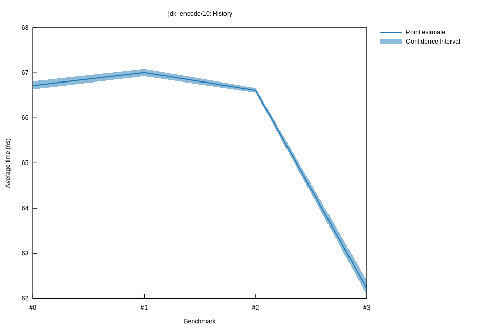

# 32022-10-16T19:54:55+03:00
|
Lower Bound |
Estimate |
Upper Bound |
| Value: |
62.08ns |
62.22ns |
62.39ns |
| Throughput: |
184.35MiB/s |
183.94MiB/s |
183.42MiB/s |
| Change in Value: |
-6.9319% |
-6.7265% |
-6.4936% |
| Change in Throughput: |
+7.4482% |
+7.2116% |
+6.9446% |
No change in performance detected.
# 22022-10-16T17:16:51+03:00
|
Lower Bound |
Estimate |
Upper Bound |
| Value: |
66.56ns |
66.61ns |
66.66ns |
| Throughput: |
171.94MiB/s |
171.80MiB/s |
171.67MiB/s |
| Change in Value: |
-2.3091% |
-1.3149% |
-0.6019% |
| Change in Throughput: |
+2.3637% |
+1.3324% |
+0.6055% |
No change in performance detected.
# 12022-10-15T17:11:35+03:00
|
Lower Bound |
Estimate |
Upper Bound |
| Value: |
66.93ns |
67.00ns |
67.08ns |
| Throughput: |
171.00MiB/s |
170.80MiB/s |
170.59MiB/s |
| Change in Value: |
+0.3841% |
+1.0999% |
+2.2505% |
| Change in Throughput: |
-0.3826% |
-1.0879% |
-2.2010% |
No change in performance detected.
# 02022-10-15T16:47:14+03:00
|
Lower Bound |
Estimate |
Upper Bound |
| Value: |
66.63ns |
66.72ns |
66.81ns |
| Throughput: |
171.74MiB/s |
171.53MiB/s |
171.29MiB/s |